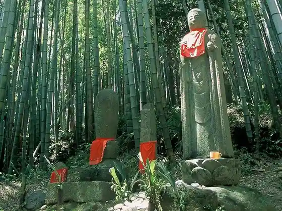
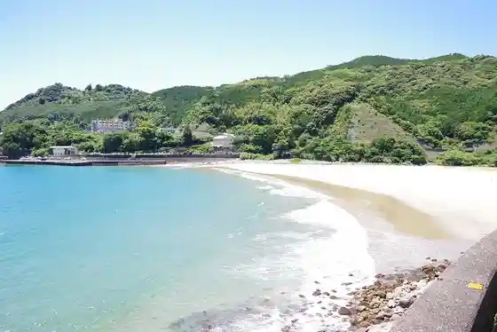
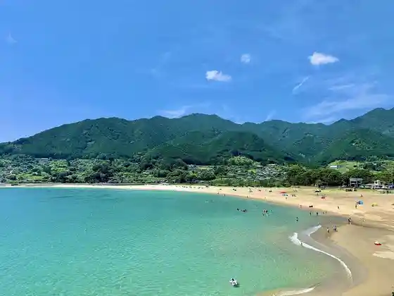
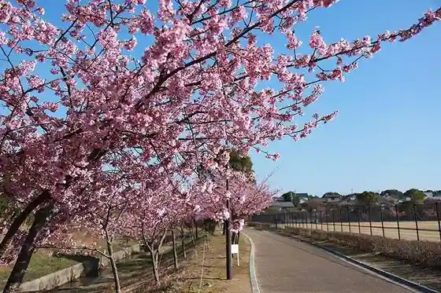

Matsumoto Toge Hana no Kutsu (Kumanoshi Kodo Ise Michi)
Kumanoshi, Mie · 0597-89-6172 · Official / source link

Onigashiro (Kumanoshi)
Kumanoshi, Mie · 0597-89-0100 · Official / source link
Odomari Beach
Kumanoshi, Mie · 0597-89-0100 · Official / source link

Atashika Coast Atashika Beach
Kumanoshi, Mie · 080-6920-1313 · Official / source link

Yamazaki Sports Park no Kawazu Sakura
Kumanoshi, Mie · 0597-85-2123 · Official / source link

Obune Umebayashi
Kumanoshi, Mie · Official / source link
Roadside Station Kumanoshi Hana no Kutsu (O Tsuna Chaya)
Kumanoshi, Mie · 0597-88-1011 · Official / source link
Shichiri Mihama Coast
Kumanoshi, Mie · 0597-89-0100 · Official / source link
Hana no Kutsu Shrine
Kumanoshi, Mie · 0597-89-0100 · Official / source link
Ao no Cave
Kumanoshi, Mie · 0597-89-2229 · Official / source link
Dorokyo Kanko Uotajietto Fune Reiwa 7 Nen 4 Gatsu 10 Nichi Yori Unko Haishi
Kumanoshi, Mie · 0597-97-1180 · Official / source link
Shishi Gan
Kumanoshi, Mie · 0597-89-0100 · Official / source link
Tsue no Mine
Kumanoshi, Mie · Official / source link
Kuma no Sutajiamu
Kumanoshi, Mie · 0597-85-2123 · Official / source link
Roadside Station Kumanoshi Ki no Kuni
Kumanoshi, Mie · 0597-70-4055 · Official / source link
Kumanoshi Norikazu Kozan Museum
Kumanoshi, Mie · 0597-97-1000 · Official / source link
Nanairo Dam (Nanairo Kyo)
Kumanoshi, Mie · 0597-89-4111 · Official / source link
Dai Tan Kura
Kumanoshi, Mie · 0597-89-0100 · Official / source link
Dorokyo (Toro Hatcho)
Kumanoshi, Mie · 0597-89-4111 · Official / source link
Kumanoshi Kaijo Kanko Yuran Sabisu (Tategasaki Kanko Yuransen)
Kumanoshi, Mie · 0597-89-2229 · Official / source link
Burutsurizumu Kuma no
Kumanoshi, Mie · 0597-70-4160 · Official / source link
Rerumauntembaiku
Kumanoshi, Mie · 05979-7-1180 · Official / source link
Torokko Densha (Konai Densha)
Kumanoshi, Mie · 0597-97-1126 · Official / source link
Motomiya Michi (Kumanoshi Kodo Ise Michi)
Kumanoshi, Mie · 0597-89-6172 · Official / source link
Akagi Castle Ruins (Akagi Shiro Park) Oyobi Tabirako Toge Keijo Ato
Kumanoshi, Mie · 0597-89-4111 · Official / source link
Maruyama Senmaida
Kumanoshi, Mie · 0597-97-1113 · Official / source link
Jofuku no Miya
Kumanoshi, Mie · 0597-89-0100 · Official / source link
Tategasaki
Kumanoshi, Mie · 0597-89-2229 · Official / source link
irokuma kids
Kumanoshi, Mie · Official / source link
Ippan Shadanhojin Higashi Kishu Chiiki Shinko Kosha
Kumanoshi, Mie · 0597-89-6172 · Official / source link
San Ta Shrine
Kumanoshi, Mie · 0597-89-2881 · Official / source link
Namita Su no Michi Dai Sui Toge (Kumanoshi Kodo Ise Michi)
Kumanoshi, Mie · 0597-89-6172 · Official / source link
Kumanoshi Kodo Omotenashi Kan
Kumanoshi, Mie · 0597-70-1231 · Official / source link
Futatsugi Shima Toge Ho Kosaka Toge (Kumanoshi Kodo Ise Michi)
Kumanoshi, Mie · 0597-89-6172 · Official / source link
Kannon Michi (Kumanoshi Kodo Ise Michi)
Kumanoshi, Mie · 0597-89-6172 · Official / source link
Tori Toge to Maruyama Senmaida (Kumanoshi Kodo Ise Michi)
Kumanoshi, Mie · 0597-89-6172 · Official / source link
Hama Kaido (Kumanoshi Kodo Ise Michi)
Kumanoshi, Mie · 0597-89-6172 · Official / source link
Senmaida Oto Campground
Kumanoshi, Mie · 0597-97-1157 · Official / source link
Mie Prefectural Kumanoshi Shonen Nature no Ie
Kumanoshi, Mie · 0597-89-3340 · Official / source link
Kumanoshi Tourist Information
Kumanoshi, Mie · 0597-89-2229 · Official / source link
Omata no Tambo Ato
Kumanoshi, Mie · 0597-89-0100 · Official / source link
Nunobiki Falls (Nippon no Taki Hyakusen)
Kumanoshi, Mie · 0597-89-4111 · Official / source link
Tan Kura Shrine
Kumanoshi, Mie · Official / source link
Manaitasama
Kumanoshi, Mie · Official / source link
Kanko Kosugaidomappu (Kumappu)
Kumanoshi, Mie · 0597-89-0100 · Official / source link
Kumanoshi Folk History Museum
Kumanoshi, Mie · 0597-89-5161 · Official / source link
Kumanoshi Tenisukoto
Kumanoshi, Mie · 0597-89-2228 · Official / source link
Yamazaki Sports Park Tenisukoto
Kumanoshi, Mie · 0597-85-2123 · Official / source link
Kitayama Ikki Kuyo to (Tabirako Toge no Ikki no Hi)
Kumanoshi, Mie · 0597-89-4111 · Official / source link
Oma no Kiyotaki
Kumanoshi, Mie · 0597-89-4111 · Official / source link
Tokuji Jinja Juso
Kumanoshi, Mie · 0597-89-4111 · Official / source link
Arima no Dai Ibuki
Kumanoshi, Mie · 0597-89-0100 · Official / source link
Yu no Tani no Kaya no Kyoboku
Kumanoshi, Mie · 0597-89-0100 · Official / source link
Yoji Yakushido (Jo Kusuri Tera)
Kumanoshi, Mie · 0597-89-4111 · Official / source link
Tori Toge Koyasu Jizo
Kumanoshi, Mie · 0597-89-4111 · Official / source link
Kujira no Kuyo to
Kumanoshi, Mie · 0597-89-4111 · Official / source link
Asuka Shrine no Osugi
Kumanoshi, Mie · 0597-89-0100 · Official / source link